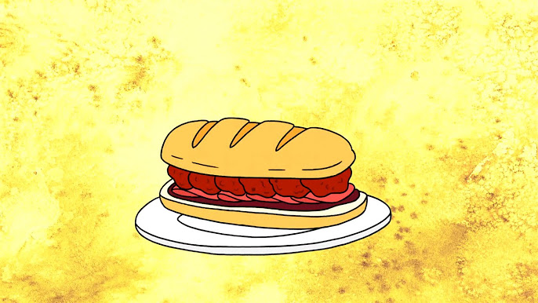

Sandwich of Death
"Thousands of years ago, in the most ancient of dojos, the most delicious sandwich in the world entered our
realm."
Eat it right, or you die.
Ingredients
- 1 cup pizza sauce
- 1/2 cup bbq sauce
- split top sub rolls, cut lengthwise
- Pack of sliced pepperoni
- pack of small sliced bacon
Meatballs
- 500 g ground beef
- 500 g ground turkey
- 120 g prosciutto, chopped
- 1 egg
- 1/4 cup shredded parmesan
- 2 tablespoon plain bread crumbs
- 1 tablespoon fresh italian parsley, chopped
- 1/4 tablespoon salt
- Pinch of ground black pepper
Directions
- Preheat your oven to 350ºF. Spray a large baking dish with non-stick spray. In a large bowl, use your hands
to squish together all of the meatball ingredients until well combined. Roll into balls (about ping pong
size) & place them in the baking dish in a single layer. Cover with foil & bake for 25-30 minutes or until
cooked through. Remove the meatballs to a container & discard the juices from the baking tray.
Alternate cooking method: Place the uncooked meatballs in a greased slow cooker & pour the sauce mixture on
top. Cook on low for 6-7 hours or high for 3-4, until fully cooked.
- n a medium bowl, stir together the spaghetti or pizza sauce with the BBQ sauce, & then spread the mixture on
the cut open sub roll. Fold several slices of sandwich pepperoni & Canadian bacon in half & lay them
alternately across the bottom half of the sub roll. Top with a row of meatballs & optional extra shredded
parmesan &/or chopped fresh parsley, & then close with the top half of the sub roll. Eat wearing cut-off
jeans & a mullet and DO NOT LEAVE SANDWICH UNACCOMPANIED UNDER ANY CIRCUMSTANCES.
Home